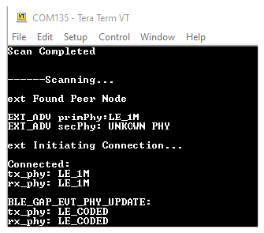
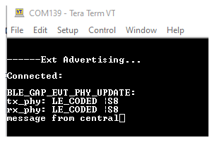
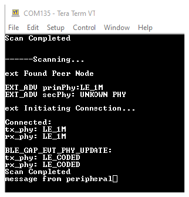
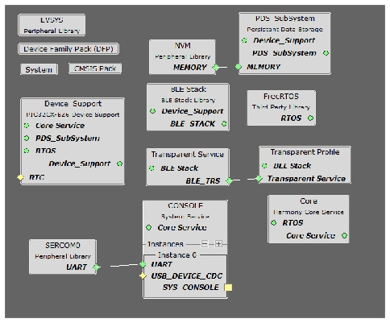
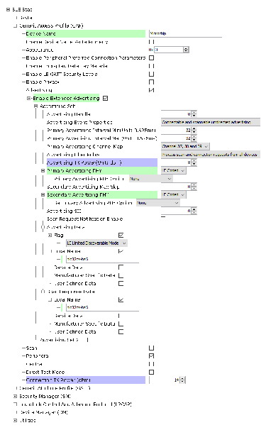
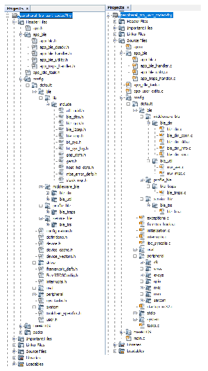
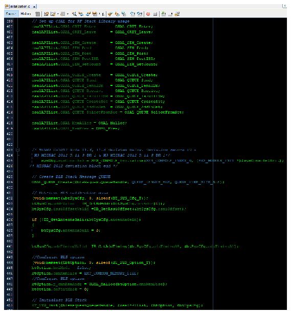
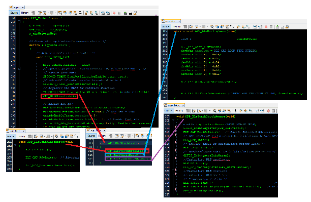
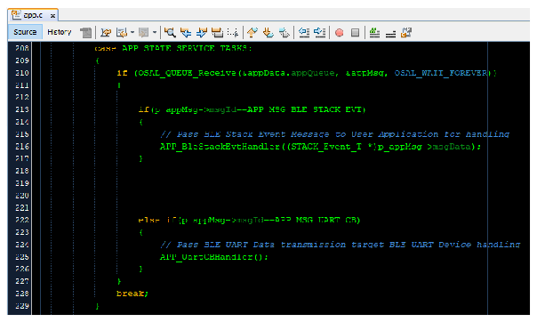

5.1.2.8 BLE Transparent UART Peripheral with LE Coded Phy
This section explains how to create a peripheral device and send/receive characters between two connected BLE devices over the Microchip proprietary Transparent UART Profile with LE Coded PHY. The peripheral device will be a PIC32-BZ6 Curiosity board and the central device another PIC32-BZ6 board.
Users can choose to either run the precompiled Application Example hex file provided on the PIC32-BZ6 Curiosity Board or follow the steps to develop the application from scratch.
These examples build upon one another. It is recommended to follow the examples in sequence to understand the basic concepts before progressing to the advanced topics.
Recommended Readings
-
Getting Started with Application Building Blocks – See Building Block Examples from Related Links.
-
Getting Started with Peripheral Building Blocks – See Peripheral Devices from Related Links.
- See BLE Connection from Related Links.
-
BLE Software Specification – See MPLAB® Harmony Wireless BLE in Reference Documentation from Related Links.
Hardware Requirement
| S. No. | Tool | Quantity |
|---|---|---|
| 1 | PIC32-BZ6 Curiosity Board | 2 |
| 2 | Micro USB cable | 2 |
SDK Setup
Refer to Getting Started with Software Development from Related Links.
Software Requirement
To install Tera Term tool, refer to the Tera Term web page in Reference Documentation from Related Links.
Smart Phone App
None
Programming the Precompiled Hex file or Application Example
Using MPLAB® X IPE:
-
Peripheral Device – Import and program the precompiled hex file:
<Harmony Content Path>\wireless_apps_pic32_bz6\apps\ble\building_blocks\peripheral\profiles_services\peripheral_trp_uart_codedPhy\precompiled_hex\peripheral_trp_uart_codedPhy.X.production.signed.hex. - Central Device – Import and program the
precompiled hex file:
<Harmony Content Path>\wireless_apps_pic32_bz6\apps\ble\building_blocks\central\profiles_services\central_trp_uart_codedPhy\precompiled_hex\central_trp_uart_codedPhy.X.production.signed.hex - For detailed steps, refer to Programming a Device in MPLAB®
IPE in Reference Documentation from Related Links..Note: Ensure to choose the correct Device and Tool information.
Using MPLAB® X IDE:
- Perform the following the steps mentioned in Running a Precompiled Example. For more information, refer to Running a Precompiled Application Example from Related Links.
-
Peripheral Device – Open and program the application
<Harmony Content Path>\wireless_apps_pic32_bz6\apps\ble\building_blocks\peripheral\profiles_services\peripheral_trp_uart_codedPhy\firmware\peripheral_trp_uart_codedPhy.X. - Central Device – Open and program the
application
<Harmony Content Path>\wireless_apps_pic32_bz6\apps\ble\building_blocks\central\profiles_services\central_trp_uart_codedPhy\firmware\central_trp_uart_codedPhy.X. - For more details on how to find the Harmony Content Path, refer to Installing the MCC Plugin from Related Links.
Demo Description
Upon programming the application, the PIC32-BZ6 Curiosity board will start Connectable Extended Advertisements with LE Coded PHY. Another PIC32-BZ6 board as a central device scanning for these advertisements will connect to the device. After a connection has been established, data can be sent back and forth over UART between the two devices. Demo will print “Ext Advertising…” indicating the start of advertisements on a terminal emulator like Tera Term. Application data to be sent to the connected central device should also be entered in the terminal emulator.
Testing
- Using micro USB cables, connect the Debug USB on the Curiosity boards to a PC
- Program the precompiled hex files or application examples as mentioned.Note: One PIC32-BZ6 board should be programmed as a peripheral UART Coded PHY (See BLE Transparent UART Peripheral with LE Coded Phy from Related Links) and the other board as a central UART Coded PHY, see BLE Transparent UART Central with LE Coded Phy from Related Links.
- Open the Tera Term of the board
programmed as peripheral_trp_uart_codedPhy and set the “Serial Port” to USB Serial Device
and “Speed” to 115200. Press SW1 to reset the board. Tera Term should display the
following message.
- For more details on how to set the “Serial Port” and “Speed”, refer to COM Port Setup in Running a Precompiled Application Example from Related Links.

- Open the Tera Term of the board
programmed as central_trp_uart_codedPhy and set the “Serial Port” to USB Serial Device and
“Speed” to 115200. Press SW1 to reset the board. Tera Term should display the following
message.

- Exchange data between the peripheral and
central devices by typing on one terminal and seeing it on the other and vice versa.


Developing the Application from Scratch using MPLAB Code Configurator
- Create a new harmony project. For more details, see Creating a New MCC Harmony Project from Related Links.
-
Setup the basic components and configuration required to develop this application, import component configuration:
<Harmony Content Path>\wireless_apps_pic32_bz6\apps\ble\building_blocks\peripheral\profiles_services\peripheral_trp_uart_codedPhy\firmware\peripheral_trp_uart_codedPhy.X\peripheral_trp_uart_codedPhy.mc3.Note: Import and Export functionality of the Harmony component configuration will help users to start from a known working setup of the MCC configuration. -
Accept dependencies or satisfiers when prompted.
-
Verify if the Project Graph window has all the expected configuration.
Figure 5-146. Project Graph 
Verify Advertisement,Connection and Transparent UART Profile Configuration
-
Select the BLE Stack component in the Project Graph and configure the following in the Configuration Options panel graph.

-
Select the Transparent Profile component in the project graph and configure the following.

Generating a Code
For more details on code generation, refer to MPLAB Code Configurator (MCC) Code Generation from Related Links.
Files and Routines Automatically generated by the MCC
After generating the program source from the MCC interface by clicking Generate Code, the BLE configuration source and header files can then be found in the following project directories.

Initialization routines for OSAL, RF System, and BLE System are auto-generated by the MCC. See OSAL Libraries Help in Reference Documentation from Related Links. Initialization routine executed during program initialization can be found in the project file.

The BLE stack initialization routine executed during Application Initialization can be found in project files. This initialization routine is automatically generated by the MCC. This call initializes and configures the GAP, GATT, SMP, L2CAP and BLE middleware layers.

Autogenerated, Advertisement Data Format
| Source Files | Usage |
|---|---|
app.c | Application State machine, includes calls for Initialization of all BLE stack (GAP,GATT, SMP, L2CAP) related component configurations |
app_ble\app_ble.c | Source code for the BLE stack related component configurations, code related to function calls from app.c |
app_ble\app_ble_handler.c | All GAP, GATT, SMP and L2CAP event handlers |
app_ble\app_trsps_handler.c | All transparent UART server related event handlers |
ble_trsps.c | All transparent server functions for user application |
app.c is autogenerated and has a state machine-based application code
sample. Users can use this template to develop their own application.Header Files
-
ble_gap.hcontains BLE GAP functions and is automatically included inapp.c -
ble_trsps.his associated with APIs and structures related to the BLE Transparent Client functions for the application user
Function Calls
- MCC generates and adds the code to
initialize the BLE Stack GAP, GATT, SMP and L2CAP in
APP_BleStackInit()
APP_BleStackInit()is the API that will be called inside the Applications Initial StateAPP_STATE_INITinapp.c
User Application Development
Include
-
Include the user action. For more information, refer to User Action from Related Links.
ble_trsps.hinapp.ccontains BLE Transparent UART Server related APIsosal/osal_freertos_extend.hinapp_trsps_handler.ccontain OSAL related APIsdefinitions.hmust be included in all the files where UART will be used to print debug informationNote:definitions.his not specific to UART but instead must be included in all the application source files where any peripheral functionality will be exercised.
Set PUBLIC Device Address in app_ble.c
-
BLE_GAP_SetDeviceAddr(&devAddr);
BLE_GAP_Addr_T devAddr;
devAddr.addrType = BLE_GAP_ADDR_TYPE_PUBLIC;
devAddr.addr[0] = 0xA1;
devAddr.addr[1] = 0xA2;
devAddr.addr[2] = 0xA3;
devAddr.addr[3] = 0xA4;
devAddr.addr[4] = 0xA5;
devAddr.addr[5] = 0xA6;
// Configure device address
BLE_GAP_SetDeviceAddr(&devAddr);Start Advertisement in
app.c
BLE_GAP_SetExtAdvEnable(true, 0x01, &extAdvEnableParam);
Connected & Disconnected Events
-
In
app_ble_handler.c,BLE_GAP_EVT_CONNECTEDevent will be generated when a BLE connection is completed
Connection Handler
- Connection handle associated with the peer peripheral device needs to be saved for data exchange after a BLE connection
p_event->eventField.evtConnect.connHandlehas this information
Transmit Data
- Add
APP_MSG_UART_Cto the generatedAPP_MsgId_TFigure 5-149. . 
-
BLE_TRSPS_SendData(conn_hdl , 1, &data);is the API to be used for sending data towards the central deviceNote: The precompiled application example uses a UART callback to initiate the data transmission upon receiving a character on UART. - Example for transmitting over UART using
the
BLE_TRSPS_SendData()API
uint16_t conn_hdl;// connection handle info captured @BLE_GAP_EVT_CONNECTED event
uint16_t ret;
uint8_t uart_data;
void uart_cb(SERCOM_USART_EVENT event, uintptr_t context)
{
APP_Msg_T appMsg;
// If RX data from UART reached threshold (previously set to 1)
if( event == SERCOM_USART_EVENT_READ_THRESHOLD_REACHED )
{
// Read 1 byte data from UART
SERCOM0_USART_Read(&uart_data, 1);
appMsg.msgId = APP_MSG_UART_CB;
OSAL_QUEUE_Send(&appData.appQueue, &appMsg, 0);
}
}
void APP_UartCBHandler()
{
// Send the data from UART to connected device through Transparent service
BLE_TRSPS_SendData(conn_hdl, 1, &uart_data);
}
// Register call back when data is available on UART for Peripheral Device to send
// Enable UART Read
SERCOM0_USART_ReadNotificationEnable(true, true);
// Set UART RX notification threshold to be 1
SERCOM0_USART_ReadThresholdSet(1);
// Register the UART RX callback function
SERCOM0_USART_ReadCallbackRegister(uart_cb, (uintptr_t)NULL);
else if(p_appMsg->msgId==APP_MSG_UART_CB)
{
// Pass BLE UART Data transmission target BLE UART Device handling
APP_UartCBHandler();
}
Receive Data
BLE_TRSPS_EVT_RECEIVE_DATAis the event generated when data is sent from the central device- Use the
BLE_TRSPS_GetDataLength(p_event->eventField.onReceiveData.connHandle, &data_len);API to extract the length of the application data received BLE_TRSPS_GetData(p_event->eventField.onReceiveData.connHandle, data);API is used to retrieve the dataNote:BLE_TRSPS_Event_Tp_eventstructure stores the information about the BLE transparent UART callback functions.- Example for printing the received data
from the central device over
UART
/* TODO: implement your application code.*/ uint16_t data_len; uint8_t *data; // Retrieve received data length BLE_TRSPS_GetDataLength(p_event->eventField.onReceiveData.connHandle, &data_len); while (data_len) { // Allocate memory according to data length data = OSAL_Malloc(data_len); if (data == NULL) break; // Retrieve received data BLE_TRSPS_GetData(p_event->eventField.onReceiveData.connHandle, data); // Output received data to UART SERCOM0_USART_Write(data, data_len); // Free memory OSAL_Free(data); //check again data_len = 0; BLE_TRSPS_GetDataLength(p_event->eventField.onReceiveData.connHandle, &data_len); }

Where to go from here
-
This app utilizes the Transparent UART building block - See BLE Sensor from Related Links.